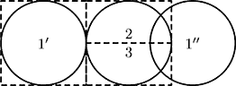

Home Page
F.A.Qs
Statistical Charts
Past Contests
Scheduled Contests
Award Contest
| Online Judge | Problem Set | Authors | Online Contests | User | ||||||
|---|---|---|---|---|---|---|---|---|---|---|
| Web Board Home Page F.A.Qs Statistical Charts | Current Contest Past Contests Scheduled Contests Award Contest | |||||||||
|
Language: Kingdom Partitioning
Description The Kingdom of Qari was conquered, and now n other Kingdoms are dividing its territory among themselves. However, each Kingdom has its own opinion on which parts of Qari’s land are better. For example, Napaj might want a large open space for settlement while Acirema is only interested in rich oilfields. To formalize their claims each Kingdom has indicated an area that it considers worthy. An area indicated by each Kingdom is a union of non-overlapping circles. A Kingdom is content with Qari’s partitioning if it receives at least 1⁄n of the area it has indicated as worthy. Your task is to propose a partitioning that satisfies all n Kingdoms. In your partitioning an area given to each Kingdom must be a convex polygon with at most 1000 vertices. In this problem it is always possible to find such partitioning. Input The first line of the input file contains an integer number n (1 ≤ n ≤ 30) — the number of Kingdoms that are dividing Qari. Then follow n sections describing the areas that were indicated by each Kingdom as worthy. The first line of each section contains an integer number mi (1 ≤ mi ≤ 30) — the number of circles indicated by i-th Kingdom. It is followed by mi lines describing circles, one circle per line. A circle is described by three integer numbers x, y, and r (−1000 ≤ x, y ≤ 1000; 1 ≤ r ≤ 1000) — the coordinates of its center and its radius correspondingly. Circles in one section do not intersect, but may touch each other. Output Write to the output file descriptions of n non-intersecting convex polygons — one for each Kingdom in the same order as in the input file. Polygons may touch each other (see sample output). Each description shall start with a line that contains a single integer number ki (3 ≤ ki ≤ 1000) — the number of vertices in the polygon, followed by ki lines with x and y coordinates of the vertices (−3000 ≤ x, y ≤ 3000). Coordinates must be precise up to 7 digits after decimal point. The vertices must be listed in either clockwise or counterclockwise direction. No three consecutive vertices are allowed to lie on the same straight line. Sample Input 3 2 0 0 2 7 0 2 1 4 0 2 1 4 0 2 Sample Output 4 2.0 2.0 -2.0 2.0 -2.0 -2.0 2.0 -2.0 4 2.0 0.0 6.0 0.0 6.0 2.0 2.0 2.0 4 2.0 0.0 6.0 0.0 6.0 -2.0 2.0 -2.0 Hint  On the example picture above, the first Kingdom has indicated as worthy a union of circles 1′ and 1″. The second and the third Kingdoms have both indicated the circle marked with 2 and 3 as worthy. One of the possible partitionings is pictured with dashed lines — the first Kingdom will receive a square area around circle 1′ while the second and the third Kingdoms will receive rectangles 2 and 3, thus getting an equal share of their indicated area. With this partitioning each Kingdom gets half of the area it has indicated as worthy, which is more than one third required by the problem statement. Source | ||||||||||
[Submit] [Go Back] [Status] [Discuss]
All Rights Reserved 2003-2013 Ying Fuchen,Xu Pengcheng,Xie Di
Any problem, Please Contact Administrator